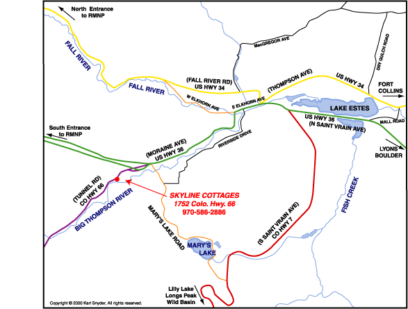

Map and Directions

- Estes Park's main street is Elkhorn Avenue.
- First stop light on Elkhorn is at Mac Donald's Hamburger.
- Go to the fourth light and turn left onto Highway 36 (also Moraine Avenue).
- Go south and west for 1-1/4 miles to stoplight which you go straight through.
- After a block, turn left onto Highway 66 for 1/4 mile.
- Skyline Cottages is on the left.
- Look for tan buildings with dark brown trim.
- 1752 Highway 66.